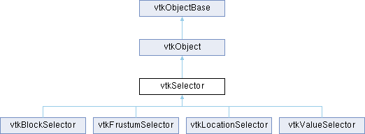

|
Etrek
|
|
Etrek
|

Public Member Functions | |
| vtkTypeMacro (vtkSelector, vtkObject) | |
| void | PrintSelf (ostream &os, vtkIndent indent) override |
| virtual void | Initialize (vtkSelectionNode *node) |
| virtual void | Finalize () |
| virtual void | Execute (vtkDataObject *input, vtkDataObject *output) |
| vtkSetMacro (InsidednessArrayName, std::string) | |
| vtkGetMacro (InsidednessArrayName, std::string) | |
| Public Member Functions inherited from vtkObject | |
| vtkBaseTypeMacro (vtkObject, vtkObjectBase) | |
| virtual void | DebugOn () |
| virtual void | DebugOff () |
| bool | GetDebug () |
| void | SetDebug (bool debugFlag) |
| virtual void | Modified () |
| virtual vtkMTimeType | GetMTime () |
| void | RemoveObserver (unsigned long tag) |
| void | RemoveObservers (unsigned long event) |
| void | RemoveObservers (const char *event) |
| void | RemoveAllObservers () |
| vtkTypeBool | HasObserver (unsigned long event) |
| vtkTypeBool | HasObserver (const char *event) |
| vtkTypeBool | InvokeEvent (unsigned long event) |
| vtkTypeBool | InvokeEvent (const char *event) |
| std::string | GetObjectDescription () const override |
| unsigned long | AddObserver (unsigned long event, vtkCommand *, float priority=0.0f) |
| unsigned long | AddObserver (const char *event, vtkCommand *, float priority=0.0f) |
| vtkCommand * | GetCommand (unsigned long tag) |
| void | RemoveObserver (vtkCommand *) |
| void | RemoveObservers (unsigned long event, vtkCommand *) |
| void | RemoveObservers (const char *event, vtkCommand *) |
| vtkTypeBool | HasObserver (unsigned long event, vtkCommand *) |
| vtkTypeBool | HasObserver (const char *event, vtkCommand *) |
| template<class U, class T> | |
| unsigned long | AddObserver (unsigned long event, U observer, void(T::*callback)(), float priority=0.0f) |
| template<class U, class T> | |
| unsigned long | AddObserver (unsigned long event, U observer, void(T::*callback)(vtkObject *, unsigned long, void *), float priority=0.0f) |
| template<class U, class T> | |
| unsigned long | AddObserver (unsigned long event, U observer, bool(T::*callback)(vtkObject *, unsigned long, void *), float priority=0.0f) |
| vtkTypeBool | InvokeEvent (unsigned long event, void *callData) |
| vtkTypeBool | InvokeEvent (const char *event, void *callData) |
| virtual void | SetObjectName (const std::string &objectName) |
| virtual std::string | GetObjectName () const |
| Public Member Functions inherited from vtkObjectBase | |
| const char * | GetClassName () const |
| virtual vtkTypeBool | IsA (const char *name) |
| virtual vtkIdType | GetNumberOfGenerationsFromBase (const char *name) |
| virtual void | Delete () |
| virtual void | FastDelete () |
| void | InitializeObjectBase () |
| void | Print (ostream &os) |
| void | Register (vtkObjectBase *o) |
| virtual void | UnRegister (vtkObjectBase *o) |
| int | GetReferenceCount () |
| void | SetReferenceCount (int) |
| bool | GetIsInMemkind () const |
| virtual void | PrintHeader (ostream &os, vtkIndent indent) |
| virtual void | PrintTrailer (ostream &os, vtkIndent indent) |
| virtual bool | UsesGarbageCollector () const |
Protected Types | |
| enum | SelectionMode { INCLUDE , EXCLUDE , INHERIT } |
Protected Member Functions | |
| virtual bool | ComputeSelectedElements (vtkDataObject *input, vtkSignedCharArray *insidednessArray)=0 |
| virtual SelectionMode | GetAMRBlockSelection (unsigned int level, unsigned int index) |
| virtual SelectionMode | GetBlockSelection (unsigned int compositeIndex, bool isDataObjectTree=true) |
| vtkSmartPointer< vtkSignedCharArray > | CreateInsidednessArray (vtkIdType numElems) |
| vtkSmartPointer< vtkSignedCharArray > | ComputeCellsContainingSelectedPoints (vtkDataObject *data, vtkSignedCharArray *selectedPoints) |
| void | ExpandToConnectedElements (vtkDataObject *output) |
| Protected Member Functions inherited from vtkObject | |
| void | RegisterInternal (vtkObjectBase *, vtkTypeBool check) override |
| void | UnRegisterInternal (vtkObjectBase *, vtkTypeBool check) override |
| void | InternalGrabFocus (vtkCommand *mouseEvents, vtkCommand *keypressEvents=nullptr) |
| void | InternalReleaseFocus () |
| Protected Member Functions inherited from vtkObjectBase | |
| virtual void | ReportReferences (vtkGarbageCollector *) |
| vtkObjectBase (const vtkObjectBase &) | |
| void | operator= (const vtkObjectBase &) |
Protected Attributes | |
| vtkSelectionNode * | Node = nullptr |
| std::string | InsidednessArrayName |
| Protected Attributes inherited from vtkObject | |
| bool | Debug |
| vtkTimeStamp | MTime |
| vtkSubjectHelper * | SubjectHelper |
| std::string | ObjectName |
| Protected Attributes inherited from vtkObjectBase | |
| std::atomic< int32_t > | ReferenceCount |
| vtkWeakPointerBase ** | WeakPointers |
Additional Inherited Members | |
| Static Public Member Functions inherited from vtkObject | |
| static vtkObject * | New () |
| static void | BreakOnError () |
| static void | SetGlobalWarningDisplay (vtkTypeBool val) |
| static void | GlobalWarningDisplayOn () |
| static void | GlobalWarningDisplayOff () |
| static vtkTypeBool | GetGlobalWarningDisplay () |
| Static Public Member Functions inherited from vtkObjectBase | |
| static vtkTypeBool | IsTypeOf (const char *name) |
| static vtkIdType | GetNumberOfGenerationsFromBaseType (const char *name) |
| static vtkObjectBase * | New () |
| static void | SetMemkindDirectory (const char *directoryname) |
| static bool | GetUsingMemkind () |
| Static Protected Member Functions inherited from vtkObjectBase | |
| static vtkMallocingFunction | GetCurrentMallocFunction () |
| static vtkReallocingFunction | GetCurrentReallocFunction () |
| static vtkFreeingFunction | GetCurrentFreeFunction () |
| static vtkFreeingFunction | GetAlternateFreeFunction () |
|
protected |
Given a data object and selected points, return an array indicating the insidedness of cells that contain at least one of the selected points.
|
protectedpure virtual |
This method computes whether or not each element in the dataset is inside the selection and populates the given array with 0 (outside the selection) or 1 (inside the selection).
The vtkDataObject passed in will never be a vtkCompositeDataSet subclass.
What type of elements are operated over is determined by the vtkSelectionNode's field association. The insidednessArray passed in should have the correct number of elements for that field type or it will be resized.
Returns true for successful completion. The operator should only return false when it cannot operate on the inputs. In which case, it is assumed that the insidednessArray may have been left untouched by this method and the calling code will fill it with 0.
Implemented in vtkBlockSelector, vtkFrustumSelector, vtkLocationSelector, and vtkValueSelector.
|
protected |
Creates an array suitable for storing insideness. The array is named using this->InsidednessArrayName and is sized to exactly numElems values.
|
virtual |
Given an input and the vtkSelectionNode passed into the Initialize() method, add to the output a vtkSignedChar attribute array indicating whether each element is inside (1) or outside (0) the selection. The attribute (point data or cell data) is determined by the vtkSelection that owns the vtkSelectionNode set in Initialize(). The insidedness array is named with the value of InsidednessArrayName. If input is a vtkCompositeDataSet, the insidedness array is added to each block.
Reimplemented in vtkBlockSelector.
|
protected |
|
inlinevirtual |
Does any cleanup of objects created in Initialize
Reimplemented in vtkLocationSelector, and vtkValueSelector.
|
protectedvirtual |
Returns whether the AMR block is to be processed. Return INCLUDE to indicate it must be processed or EXCLUDE to indicate it must not be processed. If the selector cannot make an exact determination for the given level, index it should return INHERIT. If the selection did not specify which AMR block to extract, then too return INHERIT.
Reimplemented in vtkBlockSelector.
|
protectedvirtual |
Returns whether the block is to be processed. Return INCLUDE to indicate it must be processed or EXCLUDE to indicate it must not be processed. If the selector cannot make an exact determination for the given level and index, it should return INHERIT. Note, returning INCLUDE or EXCLUDE has impact on all nodes in the subtree unless any of the node explicitly overrides the block selection mode. isDataObjectTree is true for vtkDataObjectTree and false for vtkUniformGridAMR. When isDataObjectTree == true, we treat compositeIndex == 0 differently.
Reimplemented in vtkBlockSelector.
|
virtual |
Sets the vtkSelectionNode used by this selection operator and initializes the data structures in the selection operator based on the selection.
(for example in the vtkFrustumSelector this creates the vtkPlanes implicit function to represent the frustum).
| node | The selection node that determines the behavior of this operator. |
Reimplemented in vtkBlockSelector, vtkFrustumSelector, vtkLocationSelector, and vtkValueSelector.
|
overridevirtual |
Methods invoked by print to print information about the object including superclasses. Typically not called by the user (use Print() instead) but used in the hierarchical print process to combine the output of several classes.
Reimplemented from vtkObject.
Reimplemented in vtkValueSelector.
| vtkSelector::vtkSetMacro | ( | InsidednessArrayName | , |
| std::string | ) |
Get/Set the name of the array to use for the insidedness array to add to the output in Execute call.